Instrument response function (IRF) functionality (gammapy.irf)¶
Introduction¶
gammapy.irf contains functions and classes to access and model instrument response functions (IRFs).
Theory¶
For high-level gamma-ray data analysis (measuring morphology and spectra of sources) a canonical detector model is used, where the gamma-ray detection process is simplified as being fully characterized by the following three “instrument response functions”:
- Effective area 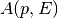 (unit: 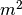)
- Point spread function 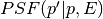 (unit: 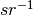)
- Energy dispersion 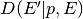 (unit: 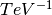)
The effective area represents the gamma-ray detection efficiency, the PSF the angular resolution and the energy dispersion the energy resolution of the instrument.
The full instrument response is given by
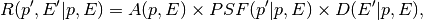
where  and
and  are the true gamma-ray position and energy
and 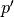 and are the reconstructed gamma-ray position and energy.
are the true gamma-ray position and energy
and 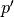 and are the reconstructed gamma-ray position and energy.
The instrument function relates sky flux models to expected observed counts distributions via
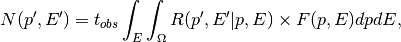
where  , 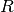, 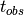 and
, 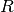, 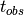 and  are the following quantities:
are the following quantities:
- Sky flux model 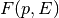 (unit: 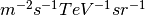)
- Instrument response 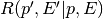 (unit: 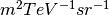)
- Observation time: (unit:
 )
) - Expected observed counts model 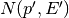 (unit: 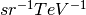)
If you’d like to learn more about instrument response functions, have a look at the descriptions for Fermi, for TeV data analysis and for GammaLib.
TODO: add an overview of what is / isn’t available in Gammapy.
Getting Started¶
TODO: document
Reference/API¶
gammapy.irf Package¶
Instrument response functions (IRFs)
Functions¶
| abramowski_effective_area(energy[, instrument]) | Simple IACT effective area parametrizations from Abramowski et al. |
| gauss_energy_dispersion_matrix(ebounds[, sigma]) | Create Gaussian energy dispersion matrix. |
| multi_gauss_psf_kernel(psf_parameters[, ...]) | Create multi-Gauss PSF kernel. |
| np_to_rmf(rm, erange, ebounds, minprob[, ...]) | Converts a 2D numpy array to an RMF FITS file. |
Classes¶
| EffectiveAreaTable(energy_lo, energy_hi, ...) | Effective area table class. |
| EnergyDependentMultiGaussPSF(energy_lo, ...) | Triple Gauss analytical PSF depending on energy and theta. |
| EnergyDependentTablePSF(energy, offset, ...) | Energy-dependent radially-symmetric table PSF (gtpsf format). |
| EnergyDispersion(pdf_matrix, energy_true_bounds) | Energy dispersion matrix. |
| GaussPSF([sigma]) | Extension of Gauss2D PDF by PSF-specific functionality. |
| HESSMultiGaussPSF(source) | Multi-Gauss PSF as represented in the HESS software. |
| PositionDependentMultiGaussPSF(hdu_list) | Position-dependent multi-Gauss PSF. |
| SherpaMultiGaussPSF(source) | Multi-Gauss PSF as represented in the Sherpa software. |
| TablePSF(offset, dp_domega[, spline_kwargs]) | Radially-symmetric table PSF. |